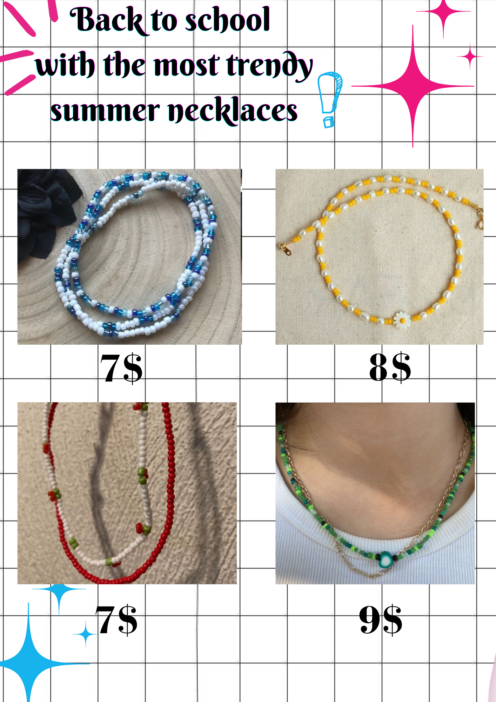
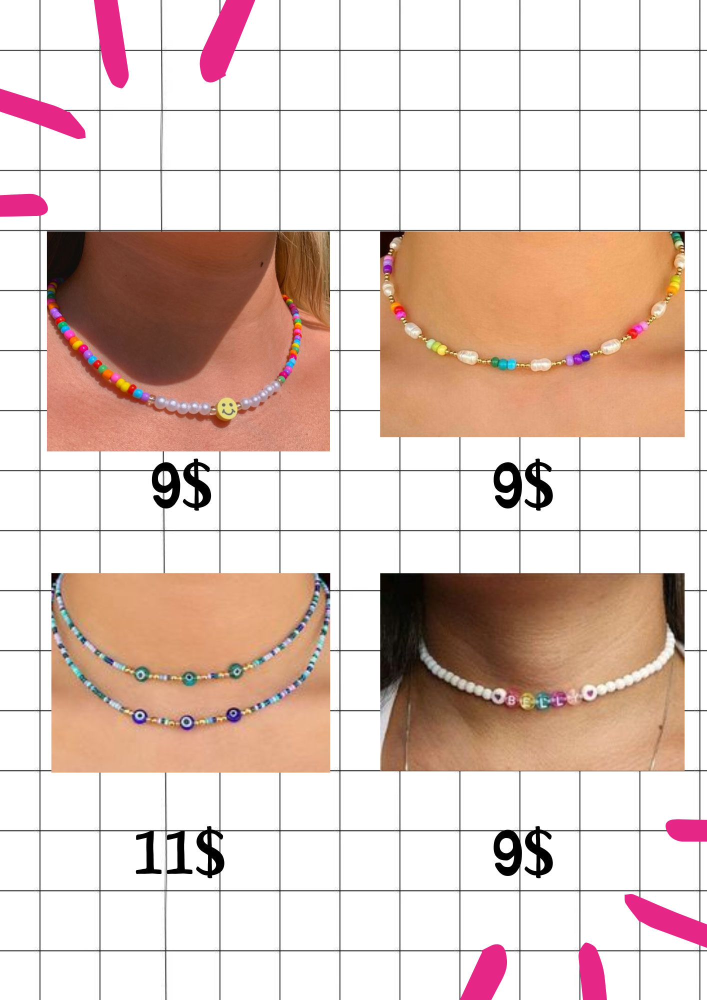

Contact us:
Email: yourglowingbeads@gmail.com
Instagram: yourglowingbeads
Phone number: +212 632387421
"Individually handcrafted with love and care, our bead necklaces are more than just accessories – they're a piece of our heart meant for everyone to cherish. Each bead strung with dedication creates a unique masterpiece, a token of craftsmanship and affection. Wearing our necklaces, you carry a piece of our heart with you, a reminder that beauty and love can be found in the smallest details."

"Individually handcrafted with love and care, our bead necklaces are more than just accessories – they're a piece of our heart meant for everyone to cherish. Each bead strung with dedication creates a unique masterpiece, a token of craftsmanship and affection. Wearing our necklaces, you carry a piece of our heart with you, a reminder that beauty and love can be found in the smallest details."

"Individually handcrafted with love and care, our bead necklaces are more than just accessories – they're a piece of our heart meant for everyone to cherish. Each bead strung with dedication creates a unique masterpiece, a token of craftsmanship and affection. Wearing our necklaces, you carry a piece of our heart with you, a reminder that beauty and love can be found in the smallest details."
.png)
.png)